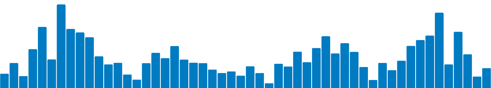

Easy web apps for data science without the compromises
No web development skills required

Here is a Shiny app
Shiny apps are easy to write. Let users interact with your data and your analysis, all with R or Python:
app.R
library(shiny)
library(bslib)
library(dplyr)
library(ggplot2)
library(ggExtra)
penguins_csv <- "https://raw.githubusercontent.com/jcheng5/simplepenguins.R/main/penguins.csv"
df <- readr::read_csv(penguins_csv)
# Find subset of columns that are suitable for scatter plot
df_num <- df |> select(where(is.numeric), -Year)
ui <- page_sidebar(
sidebar = sidebar(
varSelectInput("xvar", "X variable", df_num, selected = "Bill Length (mm)"),
varSelectInput("yvar", "Y variable", df_num, selected = "Bill Depth (mm)"),
checkboxGroupInput(
"species", "Filter by species",
choices = unique(df$Species),
selected = unique(df$Species)
),
hr(), # Add a horizontal rule
checkboxInput("by_species", "Show species", TRUE),
checkboxInput("show_margins", "Show marginal plots", TRUE),
checkboxInput("smooth", "Add smoother"),
),
plotOutput("scatter")
)
server <- function(input, output, session) {
subsetted <- reactive({
req(input$species)
df |> filter(Species %in% input$species)
})
output$scatter <- renderPlot({
p <- ggplot(subsetted(), aes(!!input$xvar, !!input$yvar)) + list(
theme(legend.position = "bottom"),
if (input$by_species) aes(color = Species),
geom_point(),
if (input$smooth) geom_smooth()
)
if (input$show_margins) {
margin_type <- if (input$by_species) "density" else "histogram"
p <- ggExtra::ggMarginal(p, type = margin_type, margins = "both",
size = 8, groupColour = input$by_species, groupFill = input$by_species)
}
p
}, res = 100)
}
shinyApp(ui, server)app.py
from pathlib import Path
import pandas as pd
import seaborn as sns
from shiny import App, Inputs, Outputs, Session, reactive, render, req, ui
sns.set_theme()
# https://raw.githubusercontent.com/jcheng5/simplepenguins.R/main/penguins.csv
df = pd.read_csv(Path(__file__).parent / "penguins.csv", na_values="NA")
numeric_cols = df.select_dtypes(include=["float64"]).columns.tolist()
species = df["Species"].unique().tolist()
species.sort()
app_ui = ui.page_sidebar(
ui.sidebar(
ui.input_selectize(
"xvar", "X variable", numeric_cols, selected="Bill Length (mm)"
),
ui.input_selectize(
"yvar", "Y variable", numeric_cols, selected="Bill Depth (mm)"
),
ui.input_checkbox_group(
"species", "Filter by species", species, selected=species
),
ui.hr(),
ui.input_switch("by_species", "Show species", value=True),
ui.input_switch("show_margins", "Show marginal plots", value=True),
),
ui.card(
ui.output_plot("scatter"),
),
)
def server(input: Inputs, output: Outputs, session: Session):
@reactive.Calc
def filtered_df() -> pd.DataFrame:
"""Returns a Pandas data frame that includes only the desired rows"""
# This calculation "req"uires that at least one species is selected
req(len(input.species()) > 0)
# Filter the rows so we only include the desired species
return df[df["Species"].isin(input.species())]
@output
@render.plot
def scatter():
"""Generates a plot for Shiny to display to the user"""
# The plotting function to use depends on whether margins are desired
plotfunc = sns.jointplot if input.show_margins() else sns.scatterplot
plotfunc(
data=filtered_df(),
x=input.xvar(),
y=input.yvar(),
hue="Species" if input.by_species() else None,
hue_order=species,
legend=False,
)
app = App(app_ui, server)